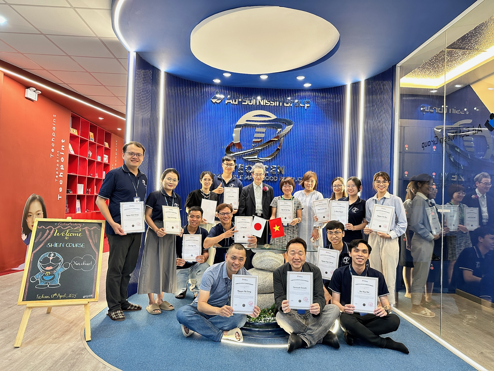
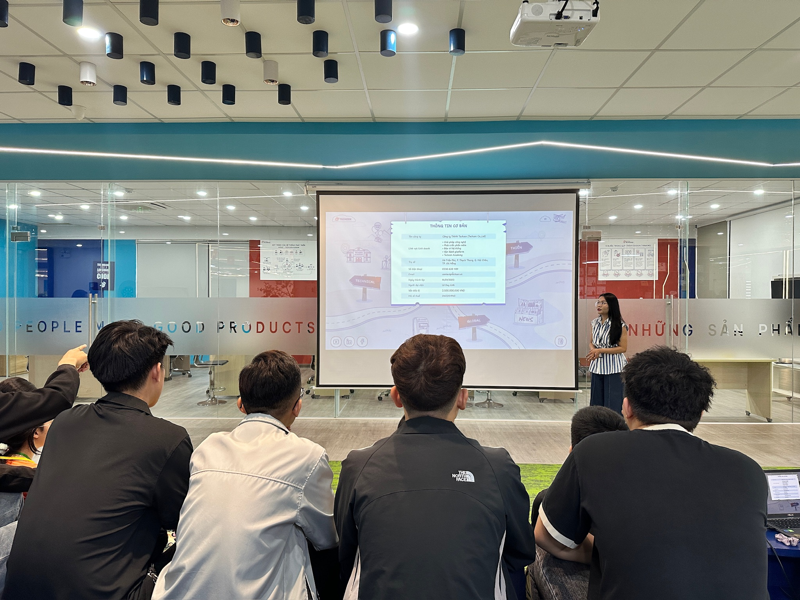
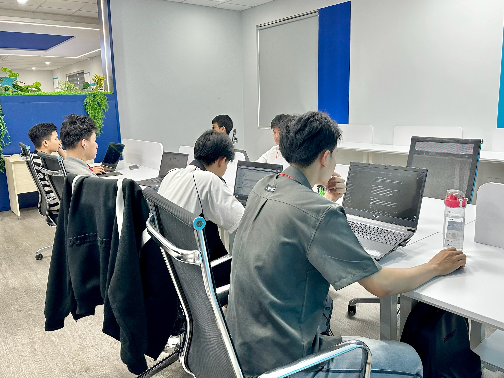
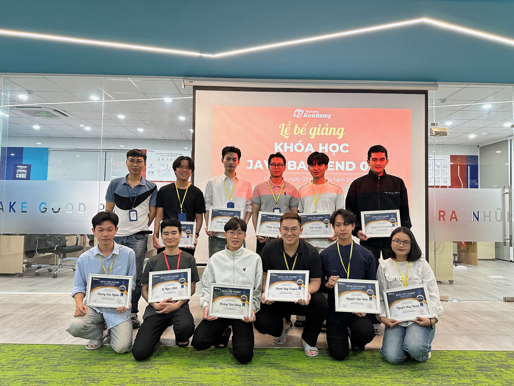

26 Tuần trở thành một FULLSTACK DEVELOPER
Tuần 1-7
Java Core & OOP
Tuần 8-10
MySQL
Tuần 11-16
Spring Boot
Tuần 17-22
Frontend - VueJS
Tuần 23-26
Mock Project
Java Core & OOP Tuần 1-7
ĐÀO TẠO TRONG MÔI TRƯỜNG THỰC CHIẾN
Nội dung học chi tiết:
- Cài đặt môi trường
- Cấu trúc điều kiện
- Cấu trúc lặp cơ bản và nâng cao
- Khai báo và sử dụng phương thức
- Hướng dẫn cách Debug Code
- Xử lý dữ liệu kiểu String
- Mảng một chiều & hai chiều
- ...
Kỹ năng bổ trợ:
- Kỹ năng cần khi tham gia dự án:
- - Agile & Scrum (Lý thuyết)
- - Agile & Scrum (Thực hành)
- - Khởi động dự án (Sprint 0)
- - Design think (Thấu cảm - phân tích vấn đề)
- - Design UI/UX (Wireframe, Flow nghiệp vụ)
- Kiến thức bổ trợ thực hành team:
- - Làm quen với HTML và cấu trúc cơ bản
- - Làm việc với CSS và quy tắc định dạng
- - JavaScript căn bản
- - Cách dùng Git để quản lý Code
MySQL Tuần 8-10
TRAU DỒI KỸ NĂNG TRAO ĐỔI LÀM VIỆC NHÓM VÀ HỢP TÁC NHÓM
Nội dung học chi tiết:
- Cấu trúc điều kiện
- Thiết kế Cơ Sở Dữ Liệu
- Thao tác với cơ sở dữ liệu
- 🧱 Giới thiệu & Câu lệnh cơ bản
- 🧰 Dữ liệu & Tạo bảng
- 🔗 JOIN & quan hệ bảng
- 📊 GROUP BY & Subquery
Kỹ năng BỔ TRỢ
- Kỹ năng cần khi tham gia dự án:
- - Hướng dẫn dùng Techkan chạy dự án (Thực hành)
- - Horensho - Báo cáo, liên lạc và trao đổi trong team
- - Unit Test (Thiết kế testcase và cách test)
- - Integration Test & Test API
- Kiến thức bổ trợ vận hành team:
- - Cách phân tích và thống kê bug
- - Cách quản lý và báo cáo tình hình bug
Spring Boot Tuần 11–16
ĐƯA ĐƯỢC HỆ THỐNG LÊN SERVER VÀ PUBLIC TRÊN INTERNET
Nội dung học chi tiết:
- Tổng quan về web
- CRUD theo RestFul API
- Mô hình MVC
- Kiến thức về JDBC – kết nối Database
- Spring Data JPA
- Làm việc với Table
- DTO & Mapstruct
- Validate, Exception Handler, Logger
- JUnit, SonarLint, SonarQube
- Authentication, Authorization
- Spring Security
- Refresh Token và Logout
Kỹ năng BỔ TRỢ
- Kiến thức về Server:
- - Tổng quan về DevOps
- - Công cụ DevOps và giám sát hệ thống
- - Hệ điều hành Linux
- - Các khối lệnh cơ bản trong Linux
- Cách build hệ thống lên Server:
- - Cách cài đặt môi trường Server
- - Thiết lập Nginx và cài đặt bảo mật
- - Cài đặt docker
- - Backup, Logging và Alerting
Frontend - VueJS Tuần 17–22
GIAI ĐOẠN CHUYỂN MÌNH, ÁP DỤNG CÁC KIẾN THỨC VÀO THỰC CHIẾN
Nội dung học chi tiết:
- Giới thiệu Vue.js & môi trường
- Templating & Binding
- Directive & Condition
- Component cơ bản
- Slot & Lifecycle
- Cách dùng Router
- Quản lý trạng thái – Vuex/Pinia
- Kết nối API & Axios
- Form và Validation
- Composition API
- Deploy & tối ưu
Kỹ năng BỔ TRỢ
- - Quản lý hiệu suất và CDN
- - Tối ưu UX và kiểm tra Form
- - Tối ưu hóa màu sắc và SEO cơ bản
- - SEO nâng cao và tối ưu hóa trang web
- - Kỹ thuật Animation và tối ưu hiệu suất
Mock Project Tuần 23-26
Nội dung học chi tiết:
- Học viên sẽ thực hiện dự án giả lập, áp dụng kiến thức đã học, rèn luyện kỹ năng teamwork, giải quyết vấn đề thực tế.
- - Triển khai dự án từ đầu đến cuối
- - Áp dụng full quy trình Agile/Scrum
- - Làm việc trong team thực tế của Techzen
- - Codebase thật, deploy thật
- - Q&A cùng PM/Leader, nhận góp ý